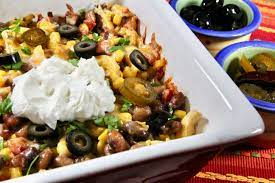

Pinto Bean and Chicken Casserole

Description
If you have a taste for Mexican and are looking for a quick and easy weeknight meal, here it is. You'll find layers of vibrant flavor and different textures in this pinto bean casserole. Suggested garnishes: chopped cilantro, sour cream, jalapenos, salsa, and black olives.
Ingredients
- Cooking spray
- 2 (15.5 ounce) cans pinto beans, drained
- 1½ cups chopped, cooked chicken
- 1 (11 ounce) can Mexican-style corn (such as Green Giant®), drained
- 1 (10 ounce) can diced tomatoes and green chiles (such as RO*TEL®), undrained
- 1 (8 ounce) can tomato sauce
- 1 teaspoon dried minced onion
- 1 teaspoon ground cumin
- ½ teaspoon garlic powder
- ½ teaspoon salt
- Ground black pepper to taste
- 1½ cups corn chips (such as Fritos®)
- 2 cups shredded Colby-Jack cheese
Steps
- Preheat the oven to 375 degrees F (190 degrees C). Spray a large casserole dish with cooking spray.
- Combine pinto beans, chicken, corn, diced tomatoes and green chiles, tomato sauce, onion, cumin, garlic powder, salt, and pepper in a large bowl.
- Spread corn chips on the bottom of the prepared casserole dish and evenly distribute the bean mixture over top. Sprinkle with Colby-Jack cheese.
- Bake in the preheated oven until cheese has melted and casserole is heated through, about 25 minutes. Serve immediately.